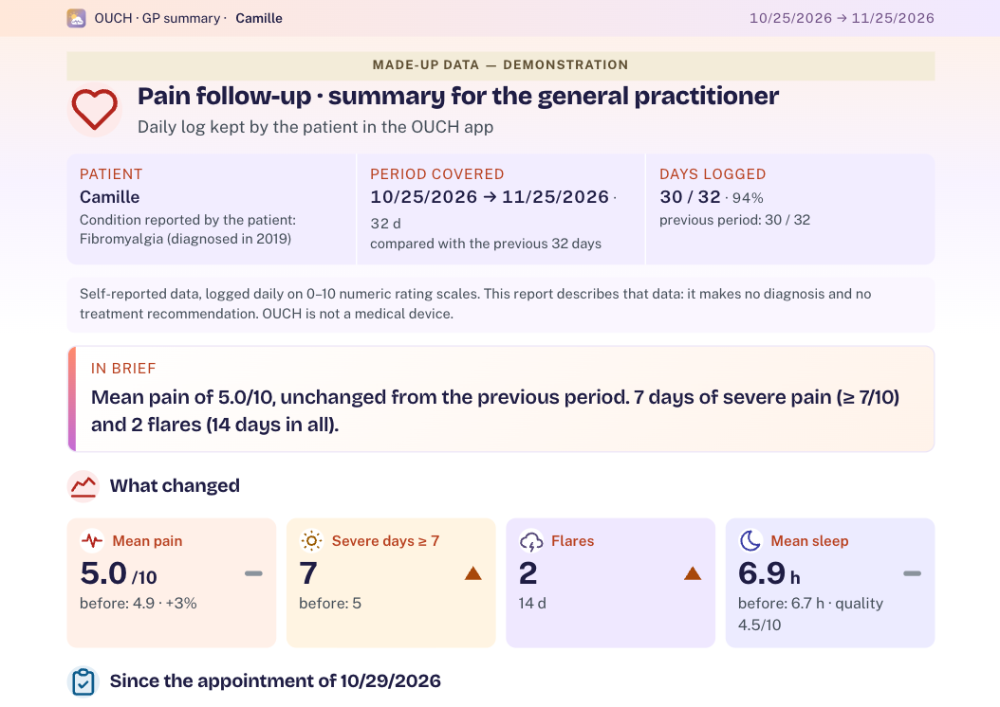

For healthcare professionals
An OUCH report,
a user guide.
Your patient’s pain diary, built for your appointment. What it is, how to read it, what it does not say.

The first page, in order
- 1The bannerPeriod covered, the period before, days logged.
- 2“In brief” and the key figuresOne sentence, then each figure with its arrow.
- 3Since the appointment of …The decisions the patient noted, and what the journal saw since.
- 4As-needed dosesIn the period and the one before.
- 5Their questionsIn their words. The curve opens page 2.
The arrow gives direction, not size: favourableoppositetoo small
Two versions
3 to 5 pages
Family doctor
Page 1 in one minute, then curve, treatments, symptoms.
6 to 10 pages
Pain clinic
A summary, then six numbered parts: pain, treatments, symptoms, habits, questions and notes, method.
Keep in mind
Self-reported, unverified data. Scales not validated. A flare is OUCH’s own definition. An association is never a cause: the report describes, it does not diagnose.
maxauvy.github.io/OUCHThe leaflet and the methodology note (every formula, every threshold) are on the release page. Demo mode: 90 made-up days.